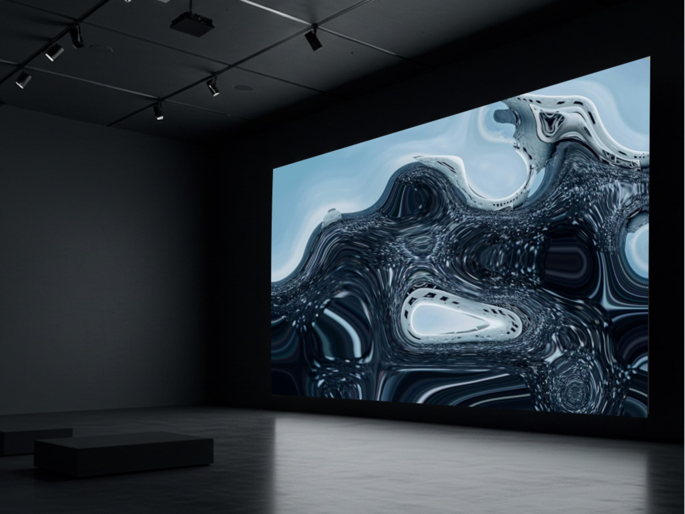
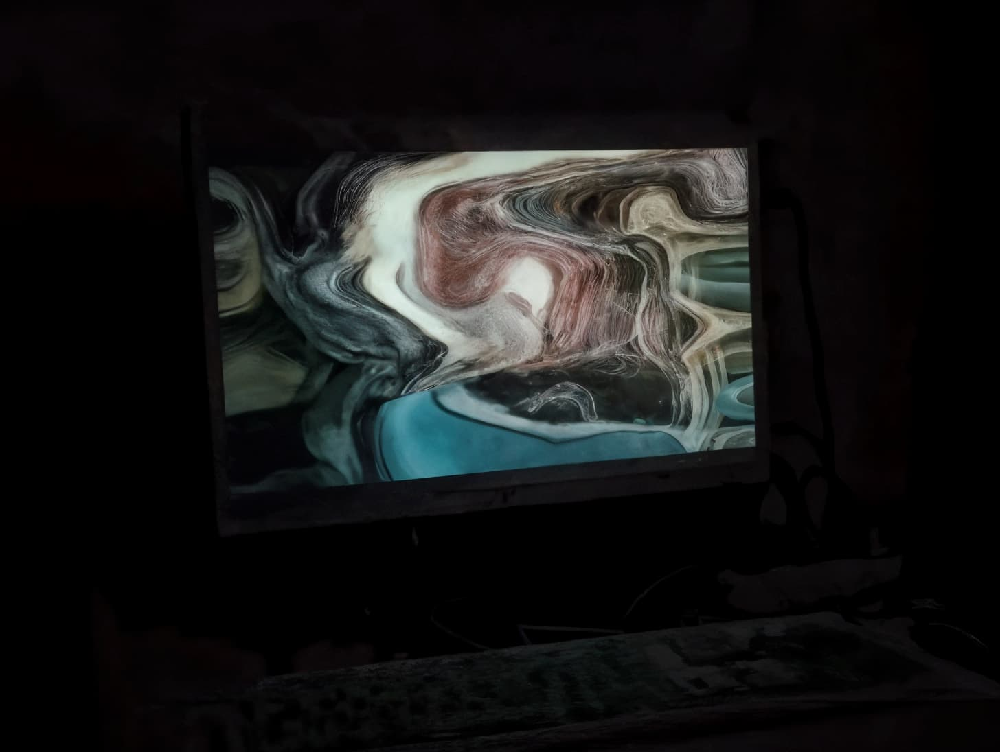
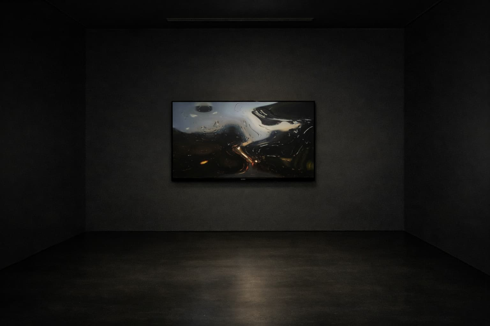

×
Net Art, Website, Custom Program, Big Data • 2025



The Flood Submerged This City is an interactive digital artwork rooted in apocalyptic mythology and contemporary ecological and technological realities. Drawing inspiration from the biblical Great Flood and present-day environmental crises, the work imagines a near future in which the physical world has collapsed and human civilization survives only as fragmented digital traces drifting through endless networks.
The project exists as a continuously running virtual environment accessible through a web interface. Rather than functioning as a static archive, the system acts as a living remnant of civilization, constantly transforming real-time visual input into unstable visual landscapes. By granting camera access, viewers contribute live images of their surroundings, which are immediately deconstructed by generative algorithms into abstract currents, while finger movements across the screen intensify the turbulence before the system gradually returns to calm.
Beyond ancient prophecy, the “flood” here also symbolizes the contemporary overflow of information and data. Images, sounds, and personal experiences are endlessly produced, circulated, and forgotten. The work turns the audience’s visual presence into ephemeral matter, questioning how memory, identity, and reality persist in an increasingly mediated world.